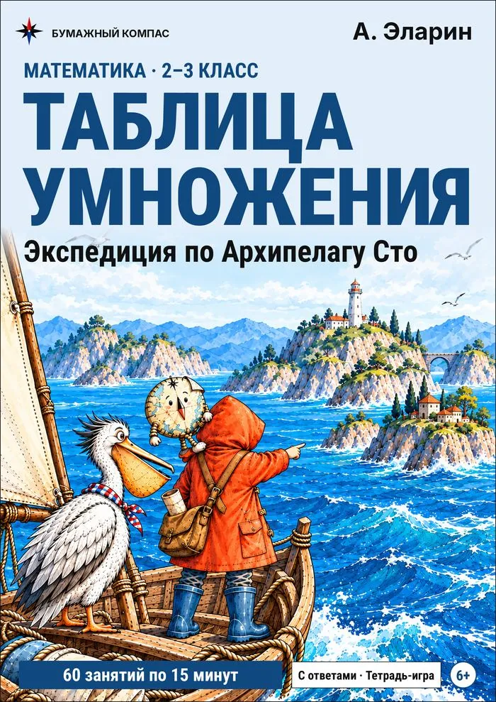

Таблица умножения
Таблица от 1 до 10, которую можно распечатать, листы с примерами и тренажёр, который чаще спрашивает то, что ребёнок ещё путает. Бесплатно и без регистрации.
Таблица от 1 до 10
| × | 1 | 2 | 3 | 4 | 5 | 6 | 7 | 8 | 9 | 10 |
|---|---|---|---|---|---|---|---|---|---|---|
| 1 | 1 | 2 | 3 | 4 | 5 | 6 | 7 | 8 | 9 | 10 |
| 2 | 2 | 4 | 6 | 8 | 10 | 12 | 14 | 16 | 18 | 20 |
| 3 | 3 | 6 | 9 | 12 | 15 | 18 | 21 | 24 | 27 | 30 |
| 4 | 4 | 8 | 12 | 16 | 20 | 24 | 28 | 32 | 36 | 40 |
| 5 | 5 | 10 | 15 | 20 | 25 | 30 | 35 | 40 | 45 | 50 |
| 6 | 6 | 12 | 18 | 24 | 30 | 36 | 42 | 48 | 54 | 60 |
| 7 | 7 | 14 | 21 | 28 | 35 | 42 | 49 | 56 | 63 | 70 |
| 8 | 8 | 16 | 24 | 32 | 40 | 48 | 56 | 64 | 72 | 80 |
| 9 | 9 | 18 | 27 | 36 | 45 | 54 | 63 | 72 | 81 | 90 |
| 10 | 10 | 20 | 30 | 40 | 50 | 60 | 70 | 80 | 90 | 100 |
Таблица по столбикам
Привычный вид из тетради: каждый столбик — умножение на одно число.
2 × 2 = 4
2 × 3 = 6
2 × 4 = 8
2 × 5 = 10
2 × 6 = 12
2 × 7 = 14
2 × 8 = 16
2 × 9 = 18
2 × 10 = 20
3 × 2 = 6
3 × 3 = 9
3 × 4 = 12
3 × 5 = 15
3 × 6 = 18
3 × 7 = 21
3 × 8 = 24
3 × 9 = 27
3 × 10 = 30
4 × 2 = 8
4 × 3 = 12
4 × 4 = 16
4 × 5 = 20
4 × 6 = 24
4 × 7 = 28
4 × 8 = 32
4 × 9 = 36
4 × 10 = 40
5 × 2 = 10
5 × 3 = 15
5 × 4 = 20
5 × 5 = 25
5 × 6 = 30
5 × 7 = 35
5 × 8 = 40
5 × 9 = 45
5 × 10 = 50
6 × 2 = 12
6 × 3 = 18
6 × 4 = 24
6 × 5 = 30
6 × 6 = 36
6 × 7 = 42
6 × 8 = 48
6 × 9 = 54
6 × 10 = 60
7 × 2 = 14
7 × 3 = 21
7 × 4 = 28
7 × 5 = 35
7 × 6 = 42
7 × 7 = 49
7 × 8 = 56
7 × 9 = 63
7 × 10 = 70
8 × 2 = 16
8 × 3 = 24
8 × 4 = 32
8 × 5 = 40
8 × 6 = 48
8 × 7 = 56
8 × 8 = 64
8 × 9 = 72
8 × 10 = 80
9 × 2 = 18
9 × 3 = 27
9 × 4 = 36
9 × 5 = 45
9 × 6 = 54
9 × 7 = 63
9 × 8 = 72
9 × 9 = 81
9 × 10 = 90
Как выучить без зубрёжки
Учить таблицу подряд, от 2 × 1 до 9 × 10, — самый долгий путь. Быстрее, когда каждый новый пример выводится из того, что ребёнок уже знает.
Половина уже выучена
От перестановки множителей произведение не меняется: 3 × 8 = 8 × 3. Из 64 примеров таблицы от 2 до 9 разных остаётся 36.
Сначала лёгкие столбики
× 2 — удвоить, × 10 — приписать ноль, × 5 — половина от × 10: 8 × 5 — это половина от 80, то есть 40.
× 4 и × 9 через знакомое
× 4 — дважды удвоить: 7 × 4 → 14 → 28. × 9 — это × 10 без одной группы: 7 × 9 = 70 − 7 = 63.
Соседняя клетка — подсказка
Забыли 7 × 8? Если помните 7 × 7 = 49, добавьте ещё одну семёрку: 49 + 7 = 56.
Деление — через умножение
56 : 7 — это вопрос «7 умножить на сколько будет 56?». Поэтому деление удобно учить вместе с умножением.
Коротко, но каждый день
Короткое занятие каждый день работает лучше, чем час в выходные. Лист из 20 примеров — как раз одно такое занятие.
Частые ошибки
Считает с самого начала
7 × 8: «7, 14, 21, 28…» — долго, и легко сбиться. Быстрее от ближайшего известного.
Путает соседние ответы
6 × 8 и 6 × 7 легко перепутать. Проверка: 6 × 10 = 60, без двух шестёрок — 48.
Знает только «в одну сторону»
Помнит 4 × 9, но теряется на 9 × 4 или 36 : 9. Решайте вперемешку — умножение и деление на одном листе.
Лист с примерами
Двадцать примеров на листе A4, ответы внизу вверх ногами — ребёнок может проверить себя сам. Впишите секретное слово, и примеры превратятся в шифровку: верные ответы сложатся в это слово.
Нажмите на лист, чтобы рассмотреть его в полный размер.
Таблица: умножение и деление
- 4 × 3 =
- 4 × 2 =
- 10 : 2 =
- 4 × 7 =
- 12 : 3 =
- 24 : 8 =
- 24 : 3 =
- 8 × 7 =
- 28 : 4 =
- 5 × 7 =
- 2 × 5 =
- 14 : 2 =
- 40 : 5 =
- 9 × 2 =
- 8 × 8 =
- 5 × 3 =
- 42 : 6 =
- 7 × 4 =
- 12 : 4 =
- 7 × 7 =
Тренажёры
Туман-Забывака
Таблица умножения и деления. Чаще спрашивает то, что ещё не выучено.
Открыть →2–4 класс · бесплатноОшибка Тюка

Верно или нет? Найдите ошибку в записи и исправьте её.
Открыть →2–4 класс · бесплатноЗадача дня

Каждый день новая задача в несколько действий — с подсказкой и решением.
Открыть →Экспедиция по Архипелагу Сто

Таблица умножения: экспедиция по Архипелагу Сто
Тетрадь-приключение для 2–3 класса: таблица умножения и деления по одной хитрости на каждом острове.
- 60 занятий по 15 минут: таблица умножения и деления без зубрёжки — через хитрости
- Пароли, лабиринты и рисунки складываются из верных ответов — ошибку видно сразу
- «Найди ошибку Тюка», задачи капитана, мини-проверка после каждой главы
- Ответы на отрезной полоске и в конце; PDF A4 для домашнего чёрно-белого принтера
На Литрес можно бесплатно полистать начало книги.
Коротко о главном
В каком классе учат таблицу умножения?
По учебнику Моро («Школа России») умножение начинают во 2 классе, а всю таблицу проходят в 3 классе. В других программах сроки могут отличаться — уточните у учителя.
Как понять, что таблица выучена?
Ответ звучит сразу, без пересчёта на пальцах, и в любом порядке: и 7 × 8, и 8 × 7, и 56 : 7. Проверить удобно листом «вперемешку» или тренажёром — он показывает, какие клетки ещё путаются.
Нужно ли отдельно учить × 1 и × 10?
Нет: при умножении на 1 число не меняется, при умножении на 10 к нему приписывают ноль. Это достаточно один раз понять.
Можно ли сохранить лист в PDF?
Да: нажмите «Печать» и выберите в окне печати «Сохранить как PDF».